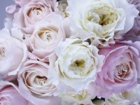
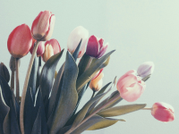
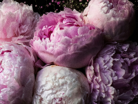

25-60-60")
Монобукеты
Монобукеты — это идеальный выбор для тех, кто ценит простоту и изящество. Такие композиции подчёркивают красоту одного вида цветов, позволяя сосредоточиться на их природной уникальности. В Julia's Flowers вы найдёте широкий ассортимент монобукетов: изысканные розы, нежные пионы, очаровательные тюльпаны, грациозные орхидеи и другие популярные цветы.
  Каждый монобукет создаётся с особой заботой, чтобы максимально раскрыть индивидуальность цветка. Это может быть как скромный букет для повседневного подарка, так и роскошная композиция для торжественного случая. Мы также предлагаем монобукеты в необычных упаковках, чтобы ваш подарок стал ещё более запоминающимся.
Для каждого монобукета мы тщательно отбираем цветы, чтобы гарантировать их свежесть, насыщенный аромат и безупречный внешний вид. Особое внимание уделяется деталям: гармоничным линиям стеблей, идеально раскрытым бутонам и стильному оформлению. Такие букеты не только подчёркивают естественную красоту цветов, но и становятся отражением вашего вкуса и настроения.
Наши флористы с радостью помогут вам подобрать монобукет для любого события. Будь то юбилей, романтический вечер или знак внимания без повода, композиция из одного вида цветов всегда передаёт особое послание. Например, розы символизируют страсть и любовь, пионы — счастье и изобилие, а тюльпаны — изысканность и элегантность.
Julia's Flowers предлагает уникальные варианты упаковки: от минималистичного оформления в бумаге до роскошных коробок или тканевых материалов. Каждый букет можно дополнить открыткой или другим аксессуаром, чтобы сделать подарок ещё более персонализированным.
Монобукеты подойдут и для оформления интерьера, привнося в помещение атмосферу уюта и естественной гармонии. Они прекрасно дополняют любой стиль — от классики до современного минимализма.
Сделайте выбор в пользу природной красоты и элегантности. В Julia's Flowers всегда готовы помочь вам выразить свои чувства через монобукеты, которые впечатляют своей изысканной простотой и утончённым стилем.
Посмотрите видео про уход за цветами Перейти на главную страницу